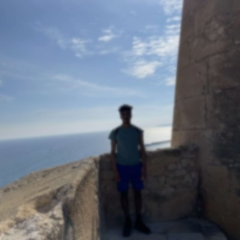

Leon Rushworth
Developer & Designer
Intro
Hi, I'm Leon. Thanks for looking at my portfolio! Here I am showcasing three of my playable independently developed video games. If you're mildly interested, I have other games available on my itch.io page, including platformers, word games, and horror titles. A link is provided at the bottom for all my games.
Games
The games below were coded in C# through Visual Studio and I developed them in Unity. Every asset was made from scratch, and the artwork was created using Adobe Illustrator.